はじめにIntroduction
- 本マニュアルの記載内容に基づいて発生した損害について、当社は一切の責任を負いません。操作は自己責任で行ってください。We accept no liability for any damages arising from the use of this manual. Operate at your own risk.
- 本マニュアルの無断転載・複製を禁じます。Unauthorized reproduction or copying of this manual is prohibited.
- インストールは、対象PCの管理者権限(インストール権限)を持つ方が行ってください。管理者権限(インストール権限)がない方ではインストールができません。Installation must be performed by a user with administrator privileges on the PC (installation is not possible without administrator privileges).
- インストールを始める前に、すべてのプログラムを終了してください。また、常駐プログラムが動作していると、正しくインストールできない場合があります。Close all running programs before starting the installation. Also, background (resident) programs may interfere with the installation.
⚠ PCへログインするパスワードを忘れてしまった方
ご入手の上、次の手順にお進みください。
Windows パスワードを忘れた場合（マイクロソフトアカウント）
Windows パスワードを忘れた場合（ローカルアカウント）
⚠ If you have forgotten your PC login password
Once obtained, proceed to the next step.
If you forgot your Windows password (Microsoft account)
If you forgot your Windows password (Local account)
「スマホで操作」applippli AuthenticatorをインストールしますInstall applippli Authenticator on your smartphone
【iPhone 端末の場合】For iPhone
iPhoneで「下記QRコード」を読み取るか、App Storeアプリを開いて「applippli Authenticator」もしくは「アプリップリオーセンティケーター」を検索して、インストールします。 On your iPhone, scan the QR code below, or open the App Store app and search for "applippli Authenticator" to install it.
【Android 端末の場合】For Android
アンドロイド端末で「下記QRコード」を読み取るか、Google Play Storeアプリを開いて「applippli」と入力して検索してください。タップしてインストールします。 On your Android device, scan the QR code below, or open the Google Play Store app and search for "applippli Authenticator" to install it.
「PCで操作」入手したPC用applippli-keyソフトをダブルクリックしインストールを開始しますOn your PC, double-click the applippli-key installer you obtained to begin installation.
- 1自己解凍画面が出ますので指示にしたがってお進みください。自己解凍が終了すると、applippli-key インストール画面が表示されます。Follow the self-extraction prompts. The applippli-key installation screen will appear once extraction is complete.
- 2言語の選択画面が表示されたら、一覧からご希望の言語を選択して ［OK］ をクリックします。When the language selection screen appears, choose your preferred language and click [OK].
- 3セットアップ開始画面になったら、画面右下の ［次へ］ ボタンをクリックします。On the setup start screen, click [Next] at the bottom right.
-
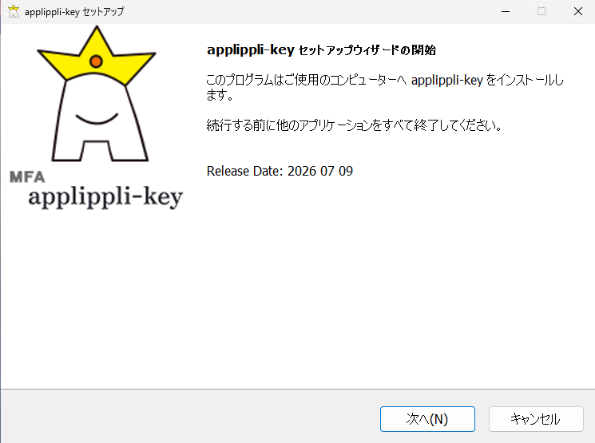
- 4当製品の使用許諾書をご確認の上、「同意する」にチェックを入れ、［次へ］ をクリックします。Read the license agreement, check "I agree," and click [Next].
-
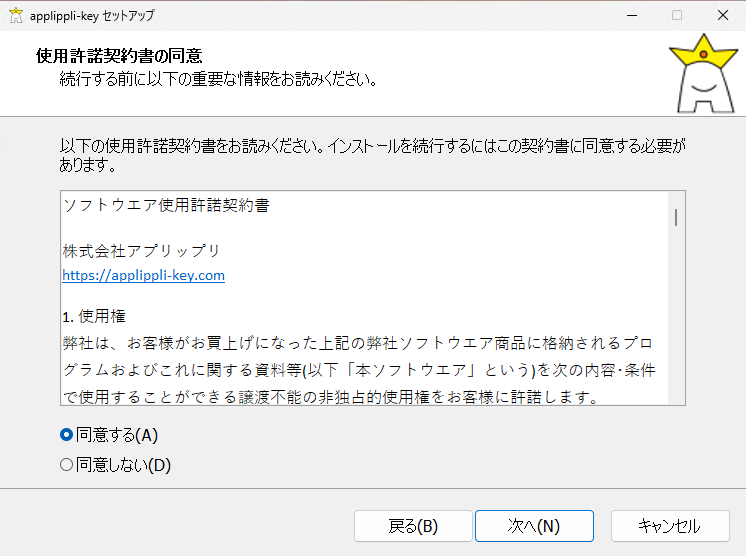
- 5スタートメニューフォルダーの指定画面は、そのまま ［次へ］ をクリックします。On the Start Menu folder screen, click [Next] to proceed with the default.
-
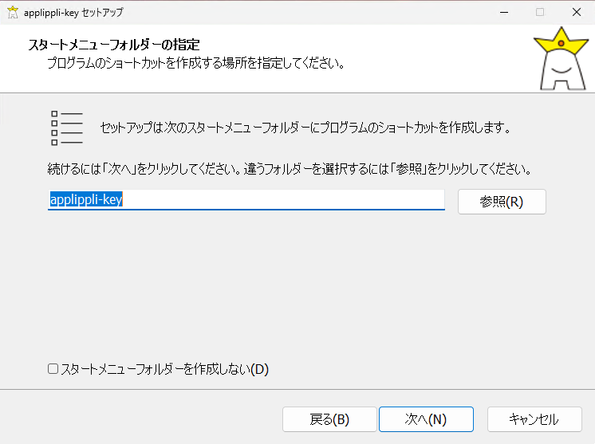
- 6そのまま ［次へ］ をクリック、次に進みます。Click [Next] to continue.
-
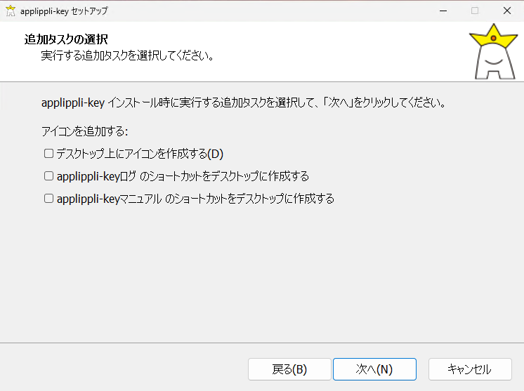
- 7［インストール］ をクリックします。applippli-key のインストールが開始されます。Review the settings and click [Install] to begin installation.
-
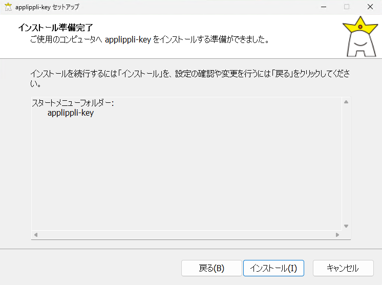
- 8［完了］ をクリックします。これでインストールは完了です。つぎに初期設定に進みます。Click [Finish]. This completes the installation. Next, proceed to the initial setup.
-
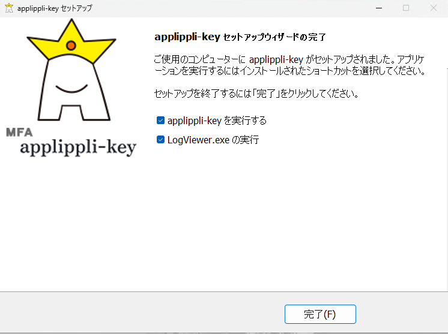
「PCで操作」アクティベーションキーを格納(On PC) Activation Key Registration
-
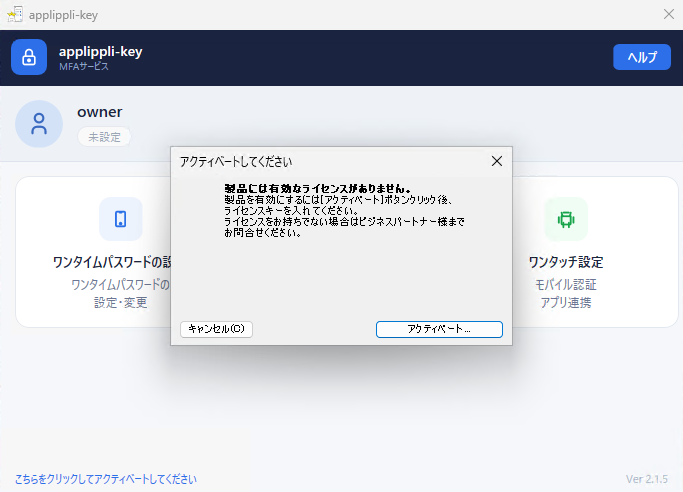
- 1 アクティベートボタンをクリックします。 Click the Activate button.
- 2 「applippli-key アクティベート」の画面が表示されたら、アクティベーションキーをコピーして、枠内にペースト(貼り付け)し ［OK］ をクリックします。 When the activation screen appears, copy your activation key and paste it into the field, then click [OK].
-
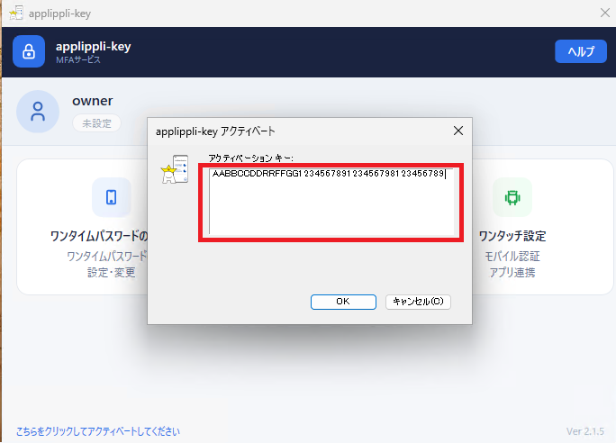
- 3 アクティベーション完了のメッセージが表示されたら ［OK］ をクリックします。 When the activation success message appears, click [OK].
「PCで操作」緊急ログオンの設定(On PC) Emergency Logon Setup
緊急ログオンは、スマートフォンを忘れた場合などに一時的に「二段階認証」を解除して、Windows パスワードを使用してログインできる仕組みです。 Emergency Logon allows you to temporarily disable two-factor authentication and log in with your Windows password — for example, when you have forgotten your smartphone.
- 1
ここは重要ですので忘れないでください（applippli-keyを開いていつでも変更できます）。
※ 半角英数字のみで入力してください。 This is important — please don't forget it (you can change it anytime by opening applippli-key).
※ Use half-width alphanumeric characters only. -
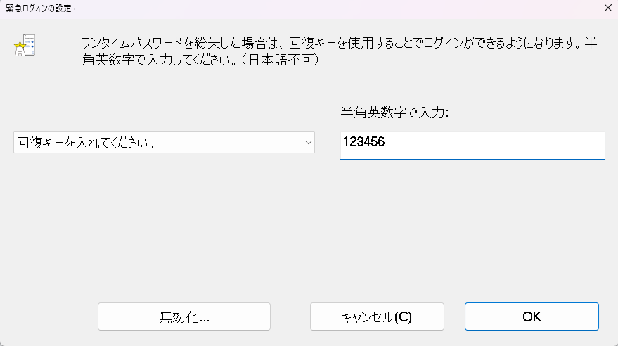
- 2 入力完了後、［OK］ をクリックします。 After entering your answer, click [OK].
「PCで操作」ワンタイムパスワードの設定(On PC) OTP Setup
- 1 ［ワンタイムパスワードの設定］ をクリックします。 Click [OTP Setup].
-
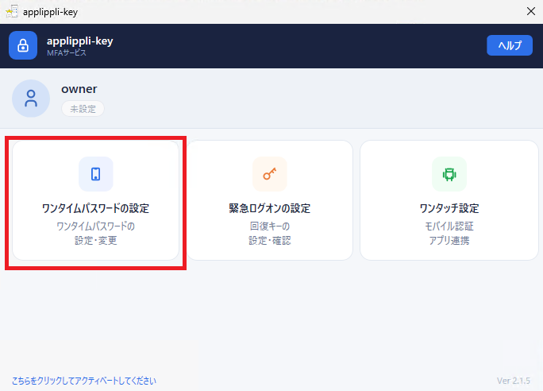
- 2
「PCで操作」「スマホで操作」QRコード表示 をクリックします。ブラウザが起動して QR コードが表示されます。表示された QR コードをスマホのapplippli Authenticatorアプリを開いて、上部の「＋」をタップしQRコードをスキャンしてください。
※ スマートフォンの「カメラアプリ」では読み取りできません。 "On PC" / "On smartphone" Click QR Code Display. A browser window will open displaying a QR code. Open the applippli Authenticator app on your smartphone, tap "+" at the top, and scan the displayed QR code.
※ The device's default camera cannot be used to scan. -
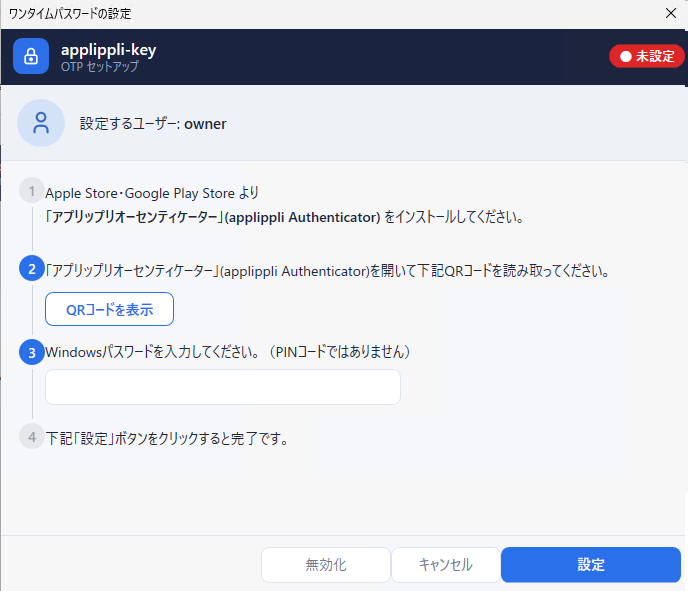
- 3 通常 PC にログインするときの Windows パスワードを入力します。入力後、［設定］ボタン をクリックして設定を完了します。 Enter your Windows login password, then click the [Set] button to complete setup.
-
⚠ PIN コードしか分からない場合 ⚠ If you only know your PIN code Windows パスワードをリセットしてください。（パスワードを忘れた場合 を参照） Please reset your Windows password. (See Forgot Password)
- 4 ワンタイムパスワード設定が完了すると、OTP 認証有効のバッジが表示されます。 Once OTP setup is complete, the OTP authentication enabled badge will appear.
-
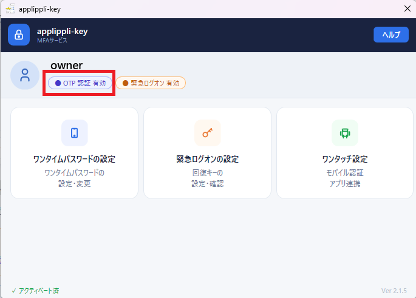
「PCで操作」ワンタッチログインの設定(On PC) One-Touch Login Setup
- 1 続いて 「ワンタッチログイン設定」 をクリックします。 Next, click "One-Touch Login Setup."
-
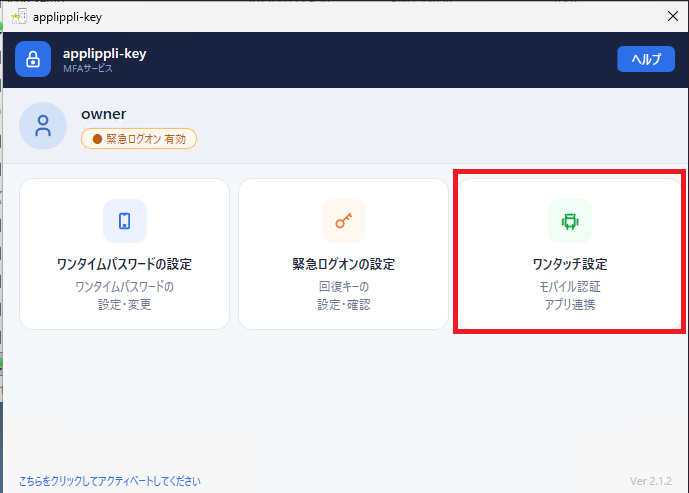
- 2 Windows パスワードを入力します。 Enter your Windows password.
-
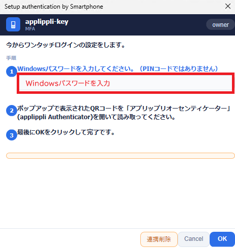
- 3 ペアリング用の QR コードが表示されます。スマホのapplippli authenticator アプリを開いて上部の「＋」をタップし、QR コードを読み取ります。 A pairing QR code will appear. Open the applippli authenticator app on your smartphone, tap "+" at the top, and scan the QR code.
- 4 スマートフォンアプリ側でペアリングが完了すると、PC画面に 「スマートフォンが接続されました」 と表示されます。 Once pairing is complete in the smartphone app, your PC screen will show "Smartphone connected."
LINE通知設定を行いますConfigure LINE Notifications
LINE 通知とはAbout LINE Notification
不正ログインおよび脅威を検知した場合、あなたの LINE へ即時通知します。 When an unauthorized login attempt or threat is detected, an instant notification is sent to your LINE.
PC: DESKTOP-OWNER
IP: 91.202.233.79
通知パターン一覧Notification Patterns
| 通知種別Type | 通知内容Message Content | 緊急度Severity |
|---|---|---|
| 🚨 ネットワーク不正アクセスNetwork Intrusion | 送信元IP・PC名・検知時刻を通知Notifies source IP, PC name, and detection time | 高High |
| 🔐 ログイン失敗多発Brute Force | 5分間に10回以上の失敗を検知した際に通知Triggered when 10+ failures occur in 5 minutes | 高High |
| 🦠 ランサムウェア検知Ransomware | ランサムウェア特有の挙動（ファイル大量変更・シャドウコピー削除等）を検知Detects ransomware behaviors (mass file changes, shadow copy deletion, etc.) | 緊急Critical |
| ⚠️ 管理者権限の不正取得Privilege Escalation | 通常アカウントからの管理者権限昇格を検知Detects privilege escalation from standard accounts | 緊急Critical |
| ✅ ログイン成功Login Success | ワンタッチ・OTP によるログイン成功を通知（任意設定）Notifies on successful one-touch/OTP login (optional) | 情報Info |
| 🛡️ IP 自動ブロックAuto IP Block | 攻撃元 IP をファイアウォールで自動ブロックした際に通知Notifies when the attack source IP is automatically blocked by firewall | 中Medium |
- 1 PC画面下部の検索窓もしくはスタートメニューから「applippli-keyログ」を発見/検索しクリックして下さい。ログ画面が表示されます。メニューの「LINE通知設定」をクリックしてくださいFind and click "applippli-key Log" from the search box at the bottom of your PC screen or the Start menu. The log screen will appear — click "LINE Notification Settings" from the menu
-
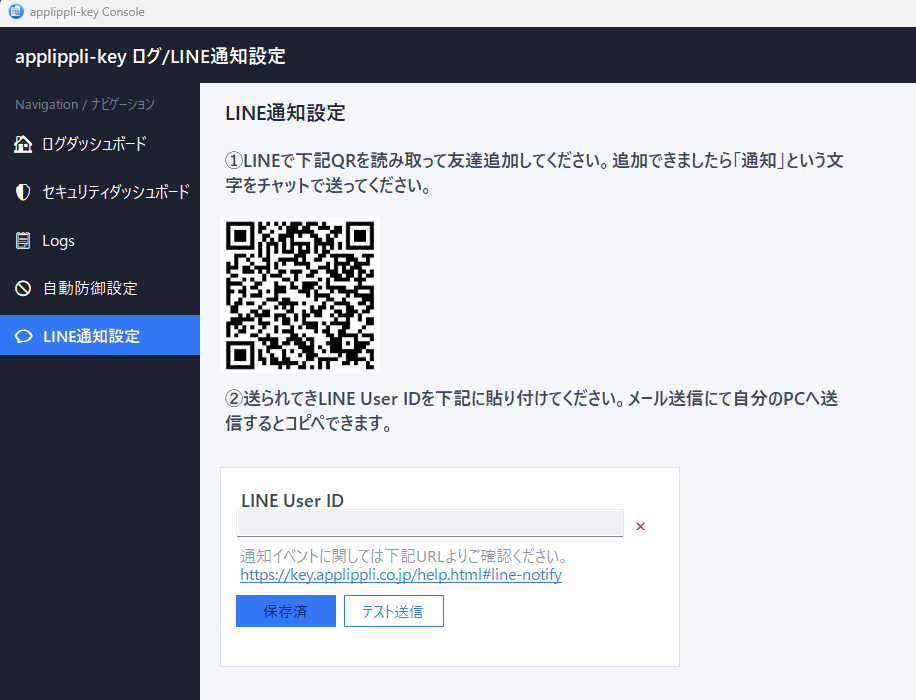
- 2 スマホでLINEを開きます。友達追加まで進み、パソコンの画面(LINE通知設定)に表示されているQRコードを読み取ります。Open LINE on your smartphone. Proceed to "Add Friend," and scan the QR code shown on your PC screen (LINE Notification Settings).
- 3 追加した友達「アプリップリセキュリティ通知」に「通知」とチャットしてください。あなたのLINE User IDが返ってきます。Chat "通知" (notify) to the added friend "applippli Security Notification." Your LINE User ID will be sent back to you.
-
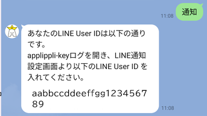
- 4
送られてきたあなたのLINE User IDを画面のLINE User ID欄に張り付けてください。
このチャットをコピーして自分宛てにメールすると、簡単にPC上でコピー貼り付けができます。Paste your received LINE User ID into the LINE User ID field on the screen.
Copying this chat and emailing it to yourself makes it easy to copy and paste on your PC. -
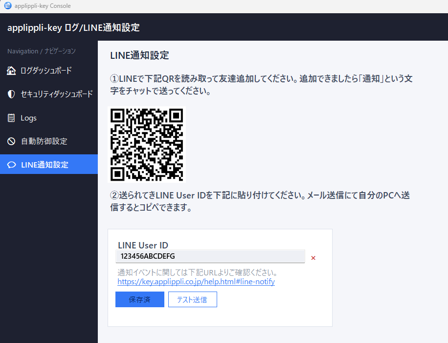
- 5 コピー貼り付けが終わりましたら、保存ボタンをクリックしてください。その右横の「テスト送信」をクリックしてテスト通知があなたのLINEに送られてくることをご確認ください。Once you have copied and pasted it, click the Save button. Then click "Send Test" next to it and confirm that a test notification is sent to your LINE.
-
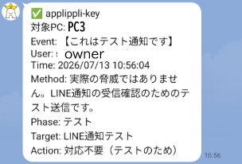
PCを一度ロックして、スマホで「アプリップリオーセンティケーター」アプリを開き、あなたのPC表示を「ワンタッチ」して、ID/パスワード共に入力不要でログインできることをご確認ください。 Setup is now complete.
Lock your PC once, open the "applippli Authenticator" app on your smartphone, tap your PC's entry ("one-touch"), and confirm that you can log in without entering your ID or password.
自動 IP ブロックAutomatic IP Blocking
「自動防御設定」タブで有効にすると、ネットワーク不正アクセスを検知した送信元 IP を Windows ファイアウォールで自動ブロックします。 When enabled in the "Auto Block Settings" tab, the source IP of detected network intrusion attempts is automatically blocked by Windows Firewall.
| 設定項目Setting | 説明Description |
|---|---|
| ブロック対象Block Target | 検知した IP の /24 サブネット単位でブロック（IP 変更による回避に対応）Blocks the /24 subnet of the detected IP (to counter evasion via IP rotation) |
| ブロック期間Block Duration | デフォルト 24 時間（1〜720 時間で設定可）または無期限。期限切れルールは 30 分おきに自動削除。Default 24 hours (configurable from 1–720 hours) or permanent. Expired rules are automatically removed every 30 minutes. |
| 除外 IP レンジExcluded IP Ranges | 社内ネットワーク（10.x / 172.16.x / 192.168.x 等）はデフォルトで除外。CIDR 形式で追加設定可。Internal networks (10.x / 172.16.x / 192.168.x etc.) are excluded by default. Additional ranges can be added in CIDR notation. |
| 手動解除Manual Unblock | 「自動防御設定」タブのリストから「今すぐ解除」ボタンで即時解除可。Click "Unblock Now" in the list on the "Auto Block Settings" tab to unblock immediately. |
ログの色分けLog Color Coding
ログ イベント早見表Log Event Quick Reference
ログ一覧の各フィールドに表示されるコードの意味と、対応が必要なケースをまとめています。 Quick reference for codes shown in each log field and when action is required.
| 表示名Display Name | 内容Description |
|---|---|
| 2段階認証ログオン2-Step Auth Logon | MFA によるログオンLogon via MFA |
| 2段階認証ロック解除2-Step Auth Unlock | MFA による画面ロック解除Screen unlock via MFA |
| 緊急ログオンEmergency Logon | 緊急コードを使用したログオンLogon using emergency code |
| リモートデスクトップ接続Remote Desktop | RDP 経由のログオンLogon via Remote Desktop Protocol |
| バージョン通知Version Info | クライアントのバージョン確認ログ。バージョン欄に番号を表示。Client version check log. Version number shown in the version column. |
| 脅威検知 〈プロセス名〉Threat — 〈process name〉 | プロセス監視・コマンドライン監視・サービス偽装・RDP有効化などの検知イベントDetection from process monitoring, command-line monitoring, service masquerading, or RDP enablement |
| ネットワーク不正アクセスNetwork Intrusion | ネットワーク経由のログオン連続失敗（5分間に10回以上）を検知Network logon burst failure detected (10+ within 5 minutes) |
| 表示Display | 要対応Action | 意味Meaning |
|---|---|---|
| 成功Success | — | 認証が正常に完了したAuthentication completed successfully |
| 失敗Failure | 継続時は要確認Check if repeated | パスワードまたは OTP が不一致Password or OTP mismatch |
| OTP間違いOTP Error | 連続時は要確認Check if repeated | ワンタイムパスワードが不正解。5分間に10回以上でバースト検知・LINE通知。One-time password incorrect. Burst detection and LINE notification triggered at 10+ within 5 minutes. |
| BYPASS | 要確認Review | MFA をバイパスしてログオン。意図しない場合は原因を調査してください。Logon bypassed MFA. Investigate if unintentional. |
| 脅威Threat | 即対応Immediate | プロセス偽装・不審コマンド・ネットワーク攻撃などの脅威を検知。備考欄に詳細と推奨対応を記録。Threat detected (process masquerade, suspicious command, network attack, etc.). Details and recommended action recorded in the notes column. |
| 情報Info | — | 参考情報の記録（例：RDP接続元クライアント名）Informational record (e.g. RDP client name) |
| SKIP | — | バージョン確認をスキップ（オフライン等）Version check skipped (offline, etc.) |
| 表示Display | 説明Description |
|---|---|
| 手入力Manual entry | 認証アプリに表示された 6 桁コードを手入力6-digit code from the authenticator app entered manually |
| ワンタッチOne-touch | スマートフォンアプリでのワンタッチ承認One-touch approval via smartphone app |
| RDP接続RDP | リモートデスクトップ経由の接続Connection via Remote Desktop Protocol |
| コンソール接続Console | コンソールセッション経由の接続Connection via console session |
緊急ログオンの使用方法Using Emergency Logon
「スマートフォンを忘れた」「無くした」「故障した」のときにログインするためのものです。 Use this when you have forgotten, lost, or broken your smartphone, and need to log in.
以前にWindowsパスワードを使用していた方For users who previously used a Windows password
- 1 PC のログイン画面上に表示されている ［緊急ログオン］ をクリックします。 Click [Emergency Logon] on the Windows login screen.
-
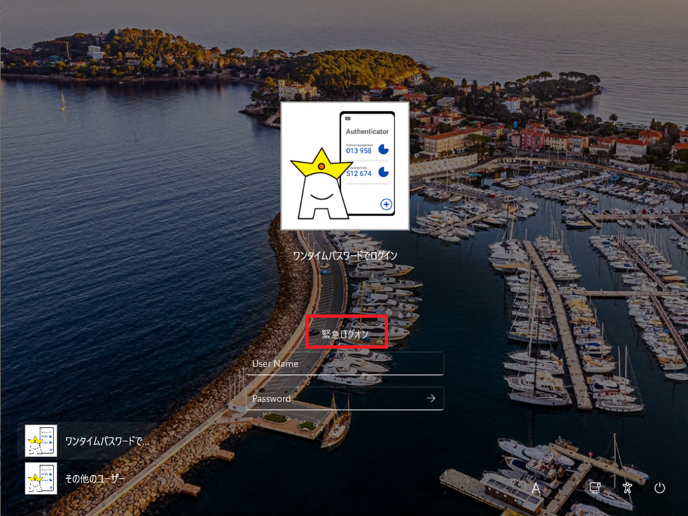
- 2 PC のユーザー名を入力し、［次へ］ をクリックします。 Enter your PC username and click [Next].
-
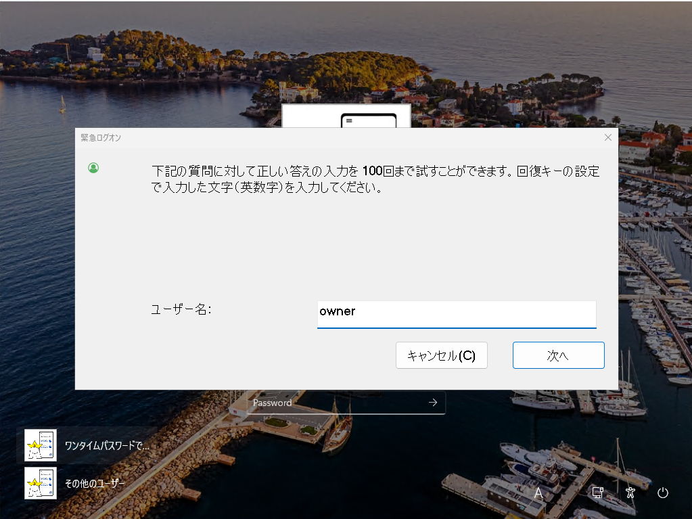
- 3
回復キーを入力し、［次へ］ をクリックします。
※ 半角英数字のみで入力してください。 Enter your recovery key, then click [Next].
※ Use half-width alphanumeric characters only. -
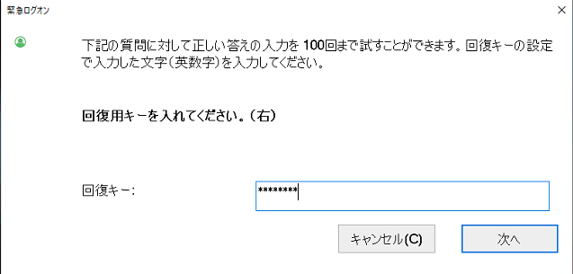
- 4 処理完了のメッセージが表示されたら ［OK］ で閉じます。 When the completion message appears, click [OK] to close it.
-
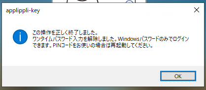
- 5 Windows パスワードでログインできるようになります。 You will now be able to log in with your Windows password.
-
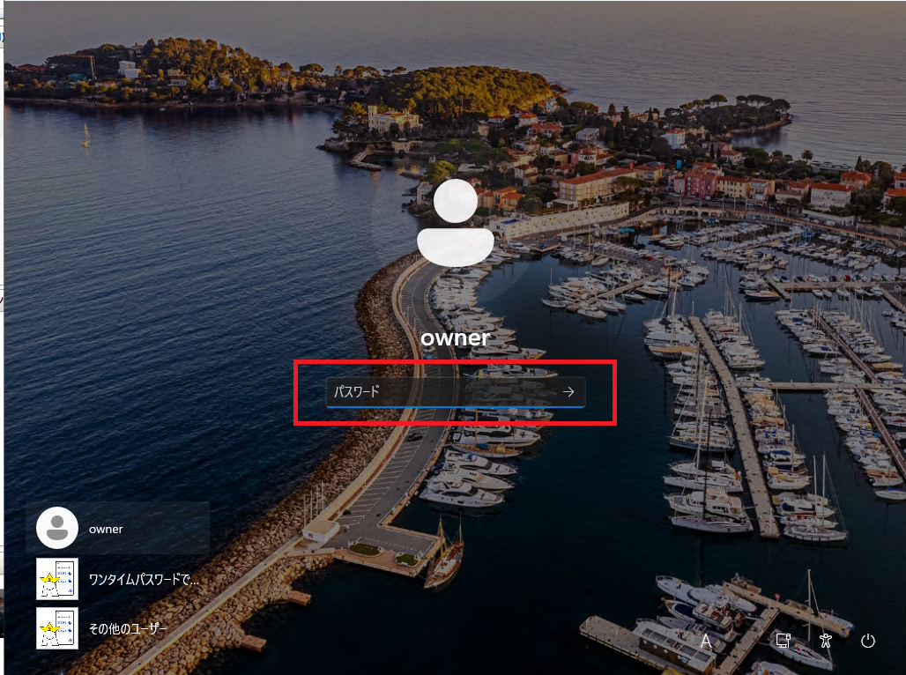
PINコードでログインしていた方For users who previously used a PIN code
- 1 PC のログイン画面上に表示されている ［緊急ログオン］ をクリックします。 Click [Emergency Logon] on the Windows login screen.
- 2 PC のユーザー名を入力し、［次へ］ をクリックします。 Enter your PC username and click [Next].
- 3
回復キーを入力し、［次へ］ をクリックします。
※ 半角英数字のみで入力してください。 Enter your recovery key, then click [Next].
※ Use half-width alphanumeric characters only. - 4 処理完了のメッセージが表示されたら ［OK］ で閉じます。 When the completion message appears, click [OK] to close it.
- 5 パソコンを再起動してください。再起動後にWindowsログイン画面上でPIN入力画面に切り替わってますので、PINコードを入力してログインしてください。 Restart your computer. After restarting, the Windows login screen will switch to the PIN entry screen — enter your PIN code to log in.
-
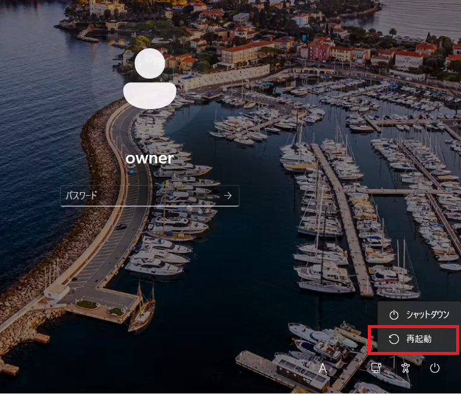
同一 PC で他ユーザーへの切り替え方法Switching to Another User on the Same PC
同一 PC で複数ユーザーが存在する場合で他のユーザーへ切り替える場合、下記の手順にて他ユーザーでのログインができます。 If multiple users are registered on the same PC, follow the steps below to log in as a different user.
- 1 ログイン画面左下にある ［その他のユーザー］ をクリックします。 Click [Other users] at the bottom left of the login screen.
-
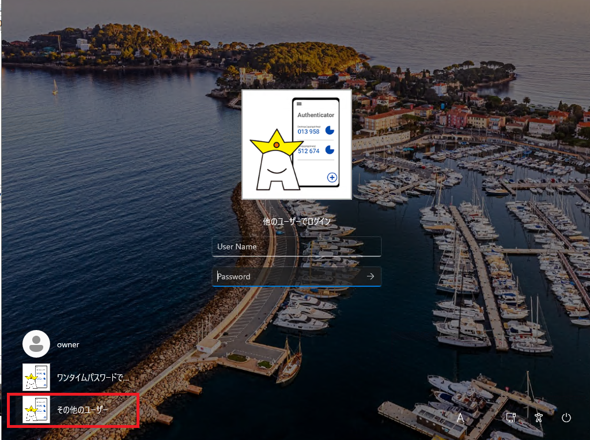
- 2 ログイン画面が ［User name］・［Password］ に変わるので、ログインしたいユーザー名及びパスワードを入力します。 The login screen changes to show [User name] and [Password] fields. Enter the username and password of the desired account.
-
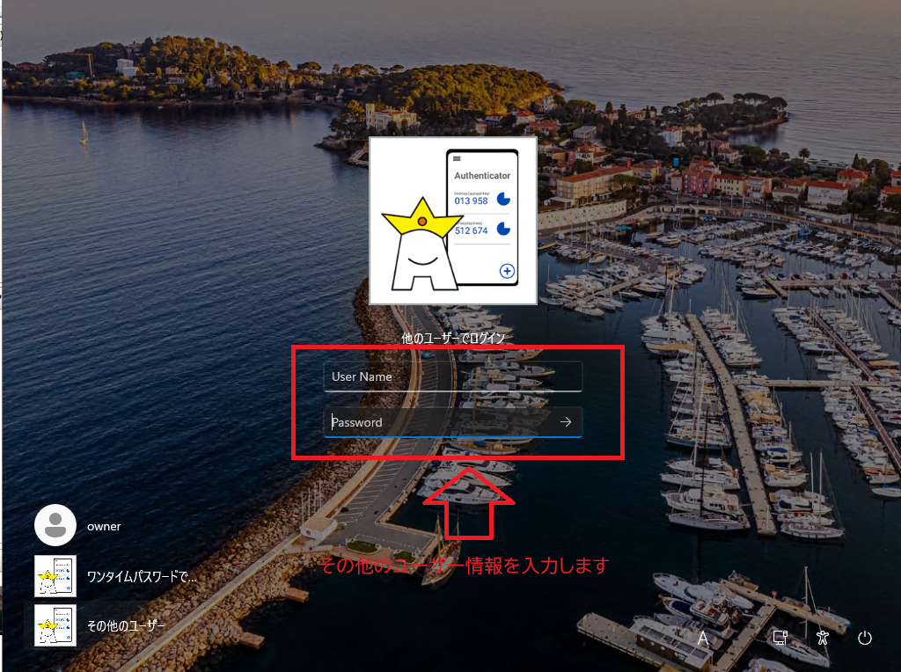
アンインストール手順Uninstall
（1）プログラムメニューからアンインストールする場合（Windows 11）(1) Uninstall via Start Menu (Windows 11)
applippli-key をアンインストールしたい PC でスタートボタンをクリック後、以下のフォルダを開きます。アンインストール画面が出たら画面の指示に従って操作してください。 Click the Start button on the PC where you want to uninstall applippli-key, then navigate to the folder below. Follow the on-screen instructions on the uninstall screen.
別の PC 端末へインストールする場合は、新たにアクティベーションキーの購入が必要です。 Reinstalling on the same PC and re-activating is permitted.
Installing on a different PC requires a new activation key purchase.
（2）プログラムの一覧からアンインストールする場合（Windows 11）(2) Uninstall via Installed Apps (Windows 11)
- 1 スタートボタンをクリック後、［設定］→ ［アプリ］→ ［インストールされているアプリ］ を開きます。 Click the Start button and go to [Settings] → [Apps] → [Installed apps].
- 2 アプリ一覧が表示されたら、［applippli-key］ の右側「…」をクリックし、アンインストールをクリックします。 In the app list, click the "…" button to the right of [applippli-key] and select Uninstall.
- 3 あとは画面の指示に従って操作してください。 Follow the on-screen instructions to complete the uninstall.
Windows パスワードを忘れた場合（マイクロソフトアカウント）Forgot Windows Password (Microsoft Account)
applippli-key 導入時に Windows パスワードを忘れた場合またはパスワードが違う場合に、マイクロソフトオンラインよりパスワードリセットできます。 If you have forgotten or do not know your Windows password during applippli-key setup, you can reset it via Microsoft online.
- 1 パソコン下部の「スタート」→「設定」→画面左の「アカウント」と進みます。 Click "Start" at the bottom of your PC → "Settings" → "Accounts" on the left of the screen.
- 2 右側のアカウントを選択します。 Select your account on the right side.
- 3 「管理」を選択します。 Select "Manage."
- 4 PIN を入力します。 Enter your PIN.
- 5 マイクロソフトアカウントページが開きます。「パスワードを変更する」 をクリックしてパスワードを変更できます。 The Microsoft account page will open. Click "Change password" to set a new password.
Windows パスワードを忘れた場合（ローカルアカウント）Forgot Windows Password (Local Account)
- 1 スタートメニューを右クリックして ［コンピューターの管理］ を選択します。 Right-click the Start menu and select [Computer Management].
-
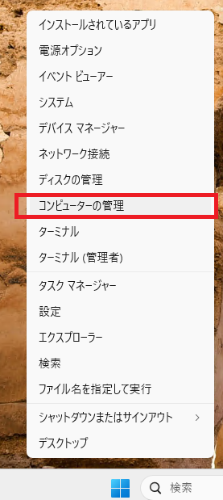
- 2 左より ［ローカルユーザーとグループ］ を展開し、［ユーザー］ を選択します。右の画面からパスワード変更したいユーザーを右クリックして「パスワードの設定」を選択します。警告メッセージは続行します。 Expand [Local Users and Groups] on the left, then select [Users]. Right-click the user whose password you want to change and select "Set Password." Acknowledge the warning to continue.
-
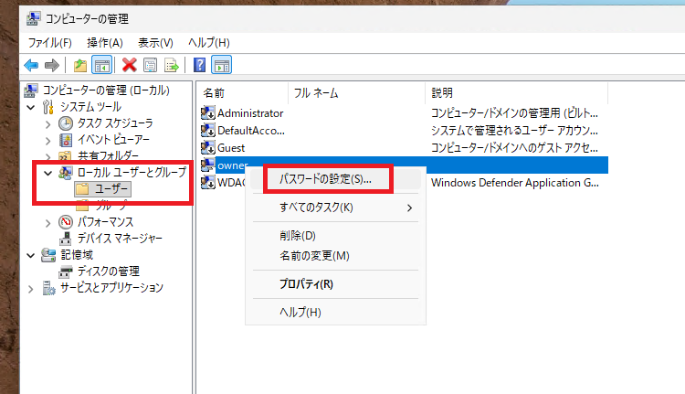
- 3 パスワード入力画面が出ますので、上下ともに同じパスワードを入力し最後にOKをクリックします。 Enter the new password in both fields and click OK.
-
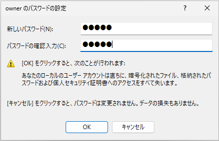
ローカルアカウントとオンラインアカウントの判別方法Identifying Local vs. Online Account
ご自分の PC がローカルアカウントもしくはオンラインアカウントどちらをご利用しているかを下記の方法にて判別できます。 You can determine whether your PC uses a local account or a Microsoft (online) account using the steps below.
- 1 設定画面を開き ［アカウント］ を選択します。 Open Settings and select [Accounts].
-
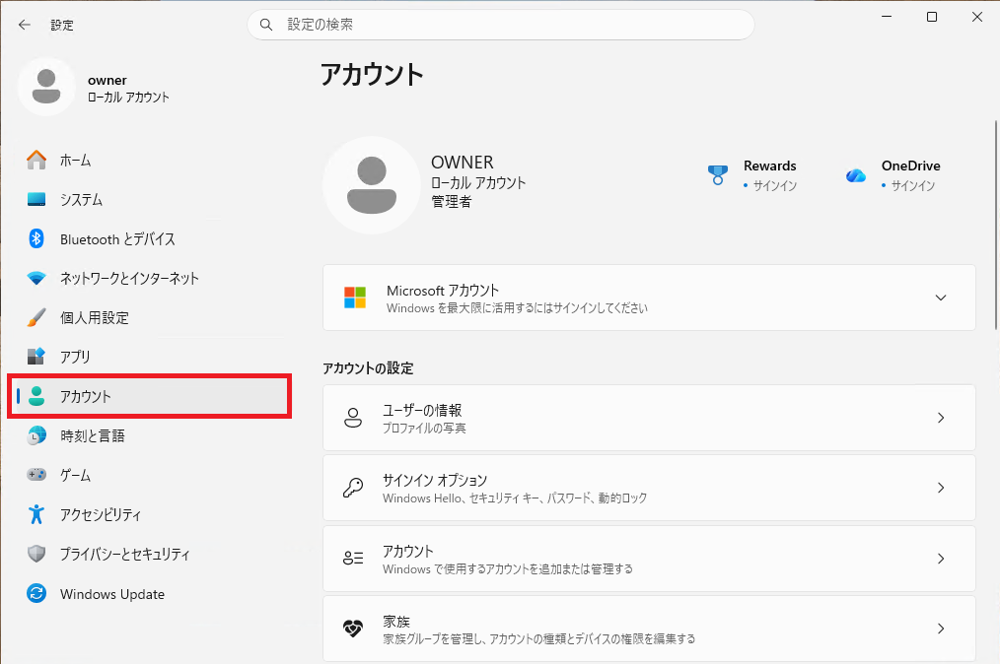
- 2 右側の ［アカウント］ をクリックします。 Click [Account] on the right.
- 3
表示内容で確認できます：
Check the displayed information:
- ローカルアカウント：なにも表示されません Local account: Nothing is displayed
- オンラインアカウント：「Microsoft アカウント」と表示されます Online account: "Microsoft account" is displayed
-
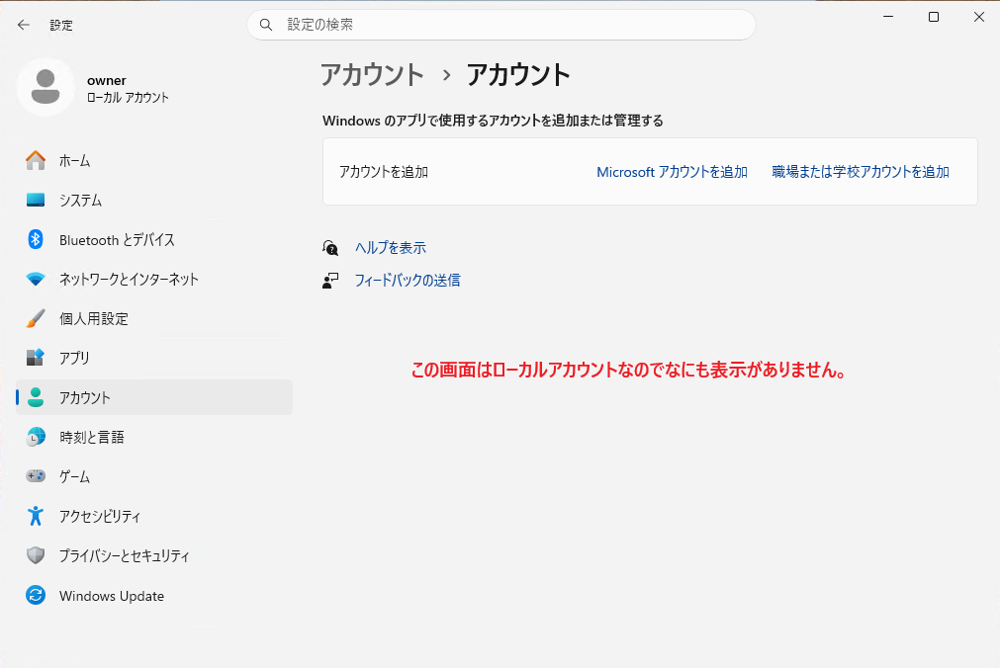